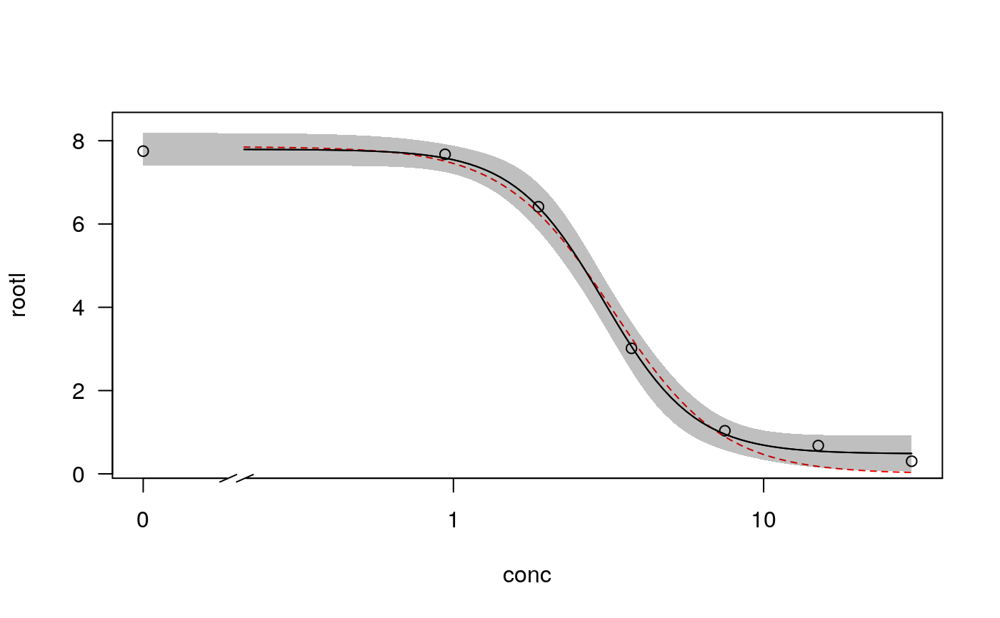
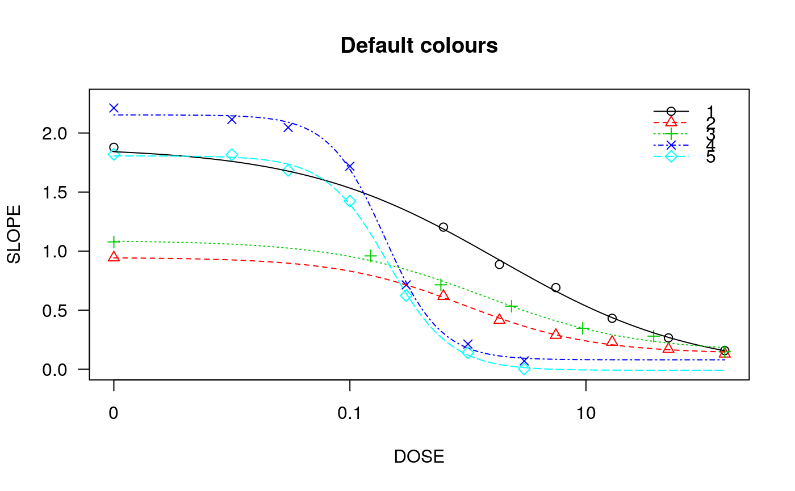
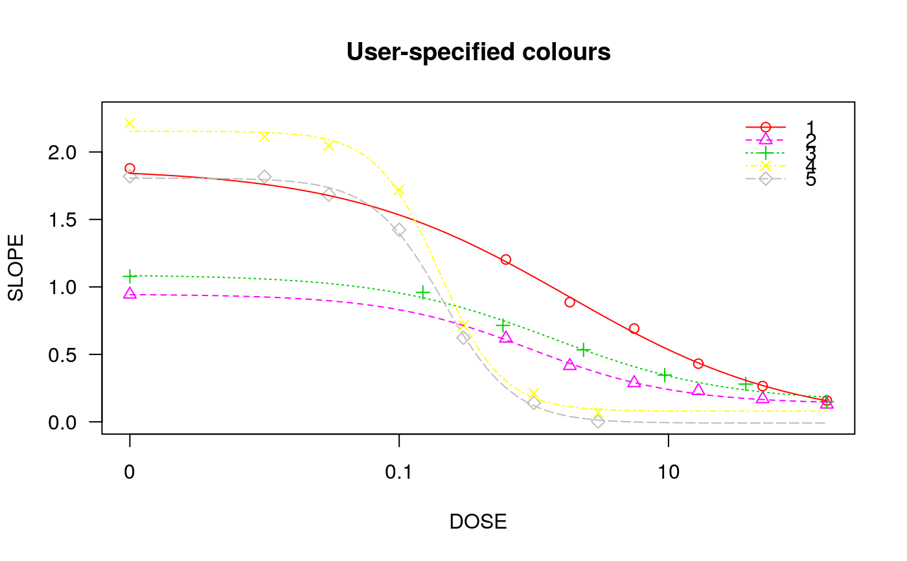
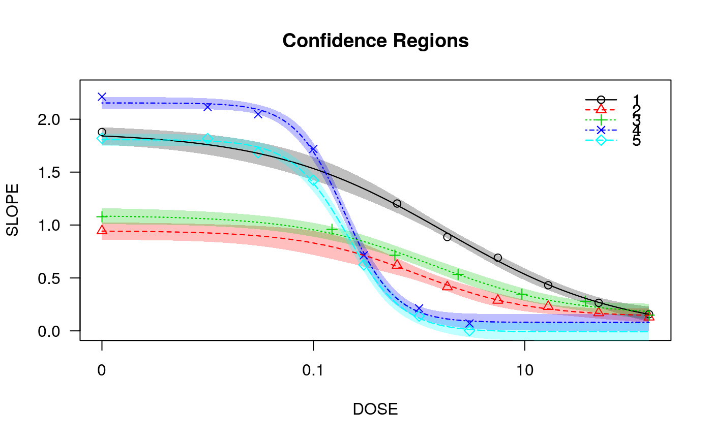

Plotting fitted dose-response curves
plot.drc.Rdplot displays fitted curves and observations in the same plot window,
distinguishing between curves by different plot symbols and line types.
# S3 method for drc plot(x, ..., add = FALSE, level = NULL, type = c("average", "all", "bars", "none", "obs", "confidence"), broken = FALSE, bp, bcontrol = NULL, conName = NULL, axes = TRUE, gridsize = 100, log = "x", xtsty, xttrim = TRUE, xt = NULL, xtlab = NULL, xlab, xlim, yt = NULL, ytlab = NULL, ylab, ylim, cex, cex.axis = 1, col = FALSE, lty, pch, legend, legendText, legendPos, cex.legend = 1, normal = FALSE, normRef = 1, confidence.level = 0.95)
Arguments
| x | an object of class 'drc'. |
|---|---|
| ... | additional graphical arguments. For instance, use |
| add | logical. If TRUE then add to already existing plot. |
| level | vector of character strings. To plot only the curves specified by their names. |
| type | a character string specifying how to plot the data. There are currently 5 options: "average" (averages and fitted curve(s); default), "none" (only the fitted curve(s)), "obs" (only the data points), "all" (all data points and fitted curve(s)), "bars" (averages and fitted curve(s) with model-based standard errors (see Details)), and "confidence" (confidence bands for fitted curve(s)). |
| broken | logical. If TRUE the x axis is broken provided this axis is logarithmic (using functionality in the CRAN package 'plotrix'). |
| bp | numeric value specifying the break point below which the dose is zero (the amount of stretching on the dose axis above zero in order to create the visual illusion of a logarithmic scale including 0). The default is the base-10 value corresponding to the rounded value of the minimum of the log10 values of all positive dose values. This argument is only working for logarithmic dose axes. |
| bcontrol | a list with components |
| conName | character string. Name on x axis for dose zero. Default is '"0"'. |
| axes | logical indicating whether both axes should be drawn on the plot. |
| gridsize | numeric. Number of points in the grid used for plotting the fitted curves. |
| log | a character string which contains '"x"' if the x axis is to be logarithmic, '"y"' if the y axis is to be logarithmic and '"xy"' or '"yx"' if both axes are to be logarithmic. The default is "x". The empty string "" yields the original axes. |
| xtsty | a character string specifying the dose axis style for arrangement of tick marks. By default ("base10")
For a logarithmic axis by default only base 10 tick marks are shown ("base10"). Otherwise sensible
equidistantly located tick marks are shown ("standard"), relying on |
| xttrim | logical specifying if the number of tick marks should be trimmed in case too many tick marks are initially determined. |
| xt | a numeric vector containing the positions of the tick marks on the x axis. |
| xtlab | a vector containing the tick marks on the x axis. |
| xlab | an optional label for the x axis. |
| xlim | a numeric vector of length two, containing the lower and upper limit for the x axis. |
| yt | a numeric vector, containing the positions of the tick marks on the y axis. |
| ytlab | a vector containing the tick marks on the y axis. |
| ylab | an optional label for the y axis. |
| ylim | a numeric vector of length two, containing the lower and upper limit for the y axis. |
| cex | numeric or numeric vector specifying the size of plotting symbols and text
(see |
| cex.axis | numeric value specifying the magnification to be used for axis annotation relative to the current setting of cex. |
| col | either logical or a vector of colours. If TRUE default colours are used. If FALSE (default) no colours are used. |
| legend | logical. If TRUE a legend is displayed. |
| legendText | a character string or vector of character strings specifying the legend text (the position of the upper right corner of the legend box). |
| legendPos | numeric vector of length 2 giving the position of the legend. |
| cex.legend | numeric specifying the legend text size. |
| lty | a numeric vector specifying the line types. |
| pch | a vector of plotting characters or symbols (see |
| normal | logical. If TRUE the plot of the normalized data and fitted curves are shown (for details see Weimer et al. (2012) for details). |
| normRef | numeric specifying the reference for the normalization (default is 1). |
| confidence.level | confidence level for error bars. Defaults to 0.95. |
Details
The use of xlim allows changing the range of the x axis, extrapolating the fitted dose-response curves.
Note that changing the range on the x axis may also entail a change of the range on the y axis. Sometimes
it may be useful to extend the upper limit on the y axis (using ylim) in order to fit a legend into
the plot.
See colors for the available colours.
Suitable labels are automatically provided.
The arguments broken and bcontrol rely on the function
link{axis.break} with arguments
style and brw in the package plotrix.
The model-based standard errors used for the error bars are calculated as the fitted value plus/minus the estimated error times the 1-(alpha/2) quantile in the t distribution with degrees of freedom equal to the residual degrees of freedom for the model (or using a standard normal distribution in case of binomial and poisson data), where alpha=1-confidence.level. The standard errors are obtained using the predict method with the arguments interval = "confidence" and level=confidence.level.
Value
An invisible data frame with the values used for plotting the fitted curves. The first column contains the dose values, and the following columns (one for each curve) contain the fitted response values.
References
Weimer, M., Jiang, X., Ponta, O., Stanzel, S., Freyberger, A., Kopp-Schneider, A. (2012) The impact of data transformations on concentration-response modeling. Toxicology Letters, 213, 292--298.
Examples
## Fitting models to be plotted below ryegrass.m1 <- drm(rootl~conc, data = ryegrass, fct = LL.4()) ryegrass.m2 <- drm(rootl~conc, data = ryegrass, fct = LL.3()) # lower limit fixed at 0 ## Plotting observations and fitted curve for the first model plot(ryegrass.m1, broken = TRUE)## Adding fitted curve for the second model (not much difference) plot(ryegrass.m2, broken = TRUE, add = TRUE, type = "none", col = 2, lty = 2)## Add confidence region for the first model. plot(ryegrass.m1, broken = TRUE, type="confidence", add=TRUE)## Finetuning the axis break plot(ryegrass.m1, broken = TRUE, bcontrol = list(style = "gap"))plot(ryegrass.m1, broken = TRUE, bcontrol = list(style = "slash"))plot(ryegrass.m1, broken = TRUE, bcontrol = list(style = "zigzag"))## Plot without axes plot(ryegrass.m1, axes = FALSE)## Fitting model to be plotted below spinach.m1 <- drm(SLOPE~DOSE, CURVE, data = spinach, fct = LL.4()) ## Plot with no colours plot(spinach.m1, main = "Different line types (default)")## Plot with default colours plot(spinach.m1, col = TRUE, main = "Default colours")## Plot with specified colours plot(spinach.m1, col = c(2,6,3,23,56), main = "User-specified colours")## Plot of curves 1 and 2 only plot(spinach.m1, level = c(1,2), main = "User-specified curves")## Plot with symbol of different sizes plot(spinach.m1, cex = c(1,2,3,4,5), main = "User-specified symbil sizes")## Plot with confidence regions plot(spinach.m1, col = TRUE, main = "Confidence Regions", type = "confidence")## Add points plot(spinach.m1, col = TRUE, add=TRUE)## Fitting another model to be plotted below lettuce.m1 <- drm(weight~conc, data = lettuce, fct = LL.4()) ## Using the argument 'bp'. Compare the plots! par(mfrow = c(2, 2)) plot(lettuce.m1, main = "bp = default") # using the default plot(lettuce.m1, bp = 1e-4, main = "bp = 1e-4") plot(lettuce.m1, bp = 1e-6, main = "bp = 1e-6") plot(lettuce.m1, bp = 1e-8, main = "bp = 1e-8")par(mfrow = c(1,1)) ## User-specified position of legend S.alba.m1 <- drm(DryMatter~Dose, Herbicide, data = S.alba, fct = LL.4()) plot(S.alba.m1)plot(S.alba.m1, legendPos = c(0.3, 4.8))